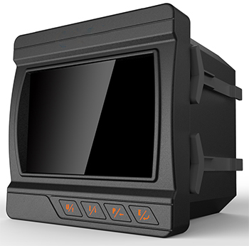
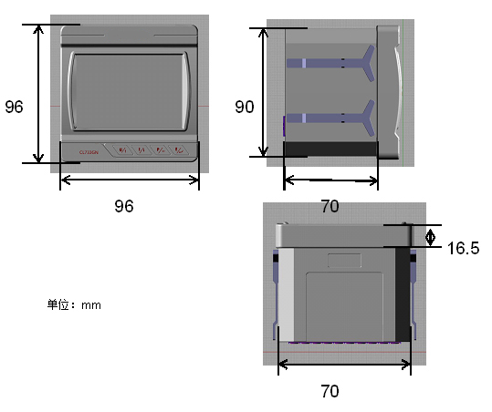
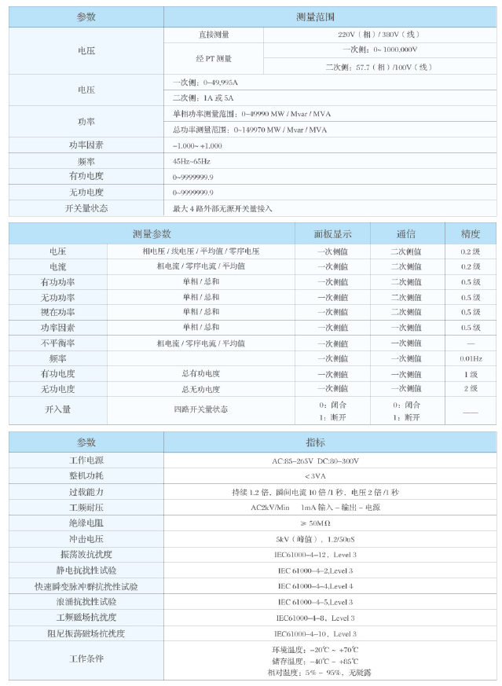
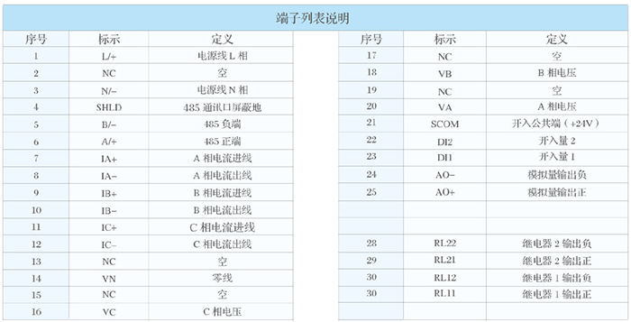

产品简介
SL300多功能电力仪表是一种具有测量、显示、通信、参数可编程等多功能的智能仪表，能够完成三相交流电量参数和开关量状态的实时测量、显示、通信传输等功能。广泛适用于各行业供配电场所、能源管理、自动化以及智能化网络监控系统等。装置面板数码管显示实时测量参数，同时具备一路RS-485通接口，采用标准MODBUS-RTU通信协议。配合SLPM2000后台监控软件，可组成配电监控系统，对仪表进行组网管理，通过后台软件实时监测全部测量电量参数。SL300适用于宽范围的交直流两种电源，功耗低。具有显示清晰、精度高、稳定性好、安装方便等优点。
SL300适用于低压三相四线制系统、低压三相三线制系统、高压三相四线制系统、高压三相三线制系统。具体接线方式请查看说明书中的接线方式说明。
装置测量参数有①：三相相/线电压，三相电流，零序电流，三相有功功率/总有功功率，三相无功功率/总无功功率，三相视在功率/总视在功率，三相功率因数/总功率因数，三相电压/电流不平衡率，三相平均电压/电流，频率，有功电度，无功电度，4路开关量状态。
应用领域
SL300 系列三相电力分析电力仪表的应用领域非常广泛，特别是在对电力品质、电力安全又要求的场合以及就地显示的场合
■能源管理系统
■工业自动化
■小区电力监控
■变电站自动化
■配电网自动化
■智能建筑
■智能型配电盘 开关柜
产品特点
◆测量参数：三相电流、三相相/线电压、三相/总有功功率、三相/总无功功率、三相/总视在功率、三相/总功率因素、频率等电量
◆显示: LED灯自动循环指示各种电参量，也可以手动切换显示
◆适用于三相四线星形和三相三线三角形两种接线方式
◆带一路RS485通信接口，标准Modbus-RTU通信协议
◆装置面板带按键，运行参数可现场编程设置
◆适用宽范围交直流两种电源，功耗低
◆一路模拟量输出：一路可编程4-20mA模拟量输出
◆2路继电器输出：采用电平方式，工作模式分为本地或远程
◆谐波测量:最高测量31次谐波显示电流和电压的各相总谐波含有
外形尺寸及开口尺寸
外形尺寸：96mm×96mm×62mm(高× 宽 × 深 )
盘面开口尺寸：91mm×91mm (高 × 宽)

测量精度及范围

环境：工作温度-25 ~ 70℃/储存温度-40 ~ 80℃/相对湿度5%-95%无结露
端子说明
